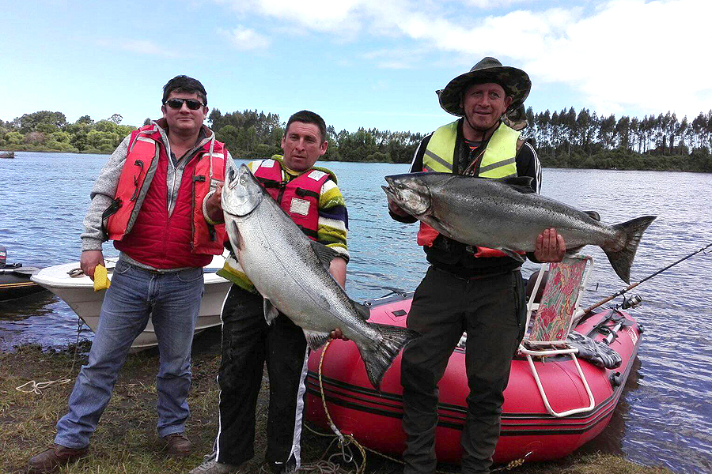

Río Toltén
Una jornada de pesca recreativa en el sector Pocoyán. Planifica el acceso y revisa las condiciones del río antes de salir.

Ubicación: sector Pocoyán, río Toltén, Región de La Araucanía.
Exigencia: variable según el acceso y las condiciones del río.
Qué llevar: chaleco salvavidas, equipo de pesca, calzado adecuado, agua y protección solar.
Clima en la ruta
Sin datos aún.
Temperatura: --
Viento: --
Cielo: --
Recomendaciones de seguridad
- Revisa la normativa, los permisos y la temporada de pesca vigentes.
- Usa chaleco salvavidas y evita entrar al agua si desconoces la corriente.
- Respeta los accesos autorizados y retira tus residuos, anzuelos y líneas.
Fuente y vigencia
Recomendaciones generales para planificar tu visita. Confirma las condiciones de acceso y la información vigente antes de viajar.
Revisar información oficial de Sernapesca (se abre en una pestaña nueva)